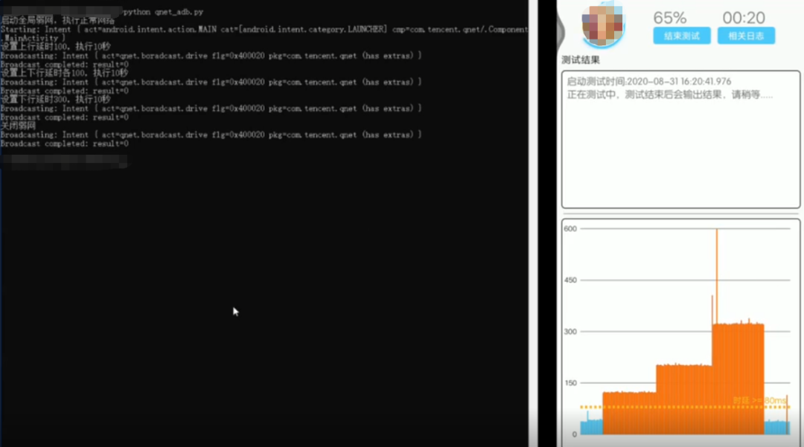

QNET 弱网测试的底层逻辑：为什么用 VPN 接管而不是改系统参数
从 QNET 的 VPN 通道设计出发，拆解弱网模拟的技术路径、进程保活约束与 ADB 接口的全量更新语义，理解这套方案的取舍与适用边界。
我第一次用 QNET 时就有一个疑问：弱网模拟到底是怎么做到的？
当时同事说"开一下 QNET，设个 300ms 延迟"，我照着做了——就是从它的官网下的那个 Android App——VPN 图标亮起来，被测应用的请求真的慢了半拍。但那个"为什么"一直悬着——市面上改网络参数的工具不少，为什么偏偏 QNET 选择走本地 VPN 通道这条路？这背后的设计取舍，决定了它能做什么、不能做什么，也解释了为什么有些场景它表现得特别好、有些场景却让你头疼。
问题：弱网模拟的两条路
先说清楚问题本身。在移动设备上模拟弱网，本质上就是在应用发出的网络请求上加一层"干扰"——加延迟、丢包、限速、抖动。实现这个干扰有两条路。
一条是改系统网络栈的参数，比如修改 TCP 窗口大小、注入 iptables 规则、或者用 Chromium 的网络服务钩子。这条路的问题是碎片化——不同厂商的 Android 系统网络栈改动很大，iOS 上更难碰系统级参数，每台设备都要单独适配，维护成本极高。
另一条路是 VPN 接管——让所有流量先经过一个本地代理，代理在转发时动手脚。这就是 QNET 选的路。它的核心假设是：只要能把流量接管过来，模拟延迟丢包就是在应用层处理数据包的事，跟底层系统无关。而 Android 和 iOS 都提供了 VPN 框架接口，这条路天然跨平台。
拆解：VPN 通道到底做了什么
从原理上讲，官方下载的那个 QNET 启动后在设备上建立一个本地 VPN 连接，所有出站流量被路由到这个虚拟网卡。QNET 进程读取这些数据包，按照你设置的弱网参数（延迟多少毫秒、丢包率百分之几、带宽上限多少）做处理，再转发到真实网络。响应回来时原路返回，延迟和丢包同样套进去。

这个设计的精妙之处在于它把复杂度收敛到了一个层面——不管底层系统怎么变，QNET 只需要维护参数引擎和代理逻辑，不用跟每家厂商的定制系统做缠斗。
但这个设计也带了一个架构层面的硬约束：VPN 通道由进程持有，进程死了通道就没了。这不是 QNET 的 bug，而是 VPN 框架本身的机制。所以你会发现 QNET 的文档里反复强调"必须加入电池白名单""锁屏要验证弱网是否还生效"——这些不是产品体验问题，而是架构决定的必然要求。进程被杀的四个来源（手动划掉、厂商省电策略、内存不足、应用崩溃）本质上都是在跟厂商的进程管理策略打架。测试前不做这几步，弱网跑到一半悄无声息失效，你还在等着看结果。
取舍：ADB 接口的全量更新语义
QNET 暴露了一套 adb 广播接口，自动化脚本可以原地更新参数而不需要重启进程。这在批量测试里非常高效——你可以做延迟梯度遍历，每次广播一条指令就能切换档位，悬浮窗读数和被测应用行为会同步变化。
但这个接口有一个容易踩的坑：更新是全量的，没写的参数一律归默认。在qnet文档里用加粗字体强调了这一点。举个例子，你用一条广播把丢包率改成 100%，但只写了丢包参数——延迟、带宽、协议这些所有其他参数会被自动清零。如果你原本在丢包的基础上还设了 200ms 延迟，这条广播一发延迟就没了。
adb shell am broadcast -a "qnet.boradcast.drive" --include-stopped-packages \
--es "command" "update" \
--ei "in_rate" 100 --ei "out_rate" 100 \
--ei "in_delay" 200 --ei "out_delay" 200 \
--ei "protocol" 3 com.tencent.qnet正确的梯度遍历写法永远是带上全量参数，每次循环把所有你关心的字段都显式声明。这看起来啰嗦，但保证了参数状态的可预测性。

判断：这套原理意味着什么
理解了上面的设计，QNET 的优缺点就很清晰了。
它的优势在于平台一致性和部署成本低——不需要 root，不需要改系统，装个 App 就能跑，ADB 接口也能直接集成进 CI/CD 流水线。弱网场景的预设模板库覆盖了从 4G 基准到高丢包高延迟的常见档位，团队内部把标准参数写进用例文档，新成员照着建模板几分钟就能上手。
它的弱点也很明确。进程保活是长期测试的头号隐患——厂商的省电策略一年比一年激进，你可能需要在七八种机型上分别设置白名单。全量更新语义增加了自动化脚本的复杂度，每次参数变化都要小心不要意外清零其他配置。还有一个容易忽略的边界：周期弱网和暂停控制会让"网络突然恢复正常"的表象出现，判断是不是进程被杀需要先看信息悬浮窗还在不在、VPN 图标亮不亮，再怀疑进程本身。
所以我的判断是，QNET 适合做应用层弱网的功能验证和交互测试——比如加载超时文案对不对、重试逻辑能不能工作、半成功状态下的幂等处理。这些场景关注的是应用行为在弱网下是否正确，不需要精确复现运营商级别的网络异常。它的模板管理功能让团队可以把标准档位固化成可复用的用例资产，长期运维下来能沉淀一套自己的弱网测试知识库。
如果你要做更底层的网络性能分析、TCP 协议栈调优、或者需要复现特定运营商的 RTT 波动曲线，QNET 的精度可能不够——它的参数模型是简化的，而且跑在应用层本身就有额外的开销。对于这类场景，应该考虑更底层的模拟工具。
QNET 的参数模板和使用案例我同步到了三个仓库，GitHub 是主维护渠道，国内用户可以从Gitee 或GitCode 访问备份副本。对移动开发和 QA 来说，它是一个值得理解其底层设计的工具——知道了为什么它这么工作，才能用好它也知道什么时候该放下它。